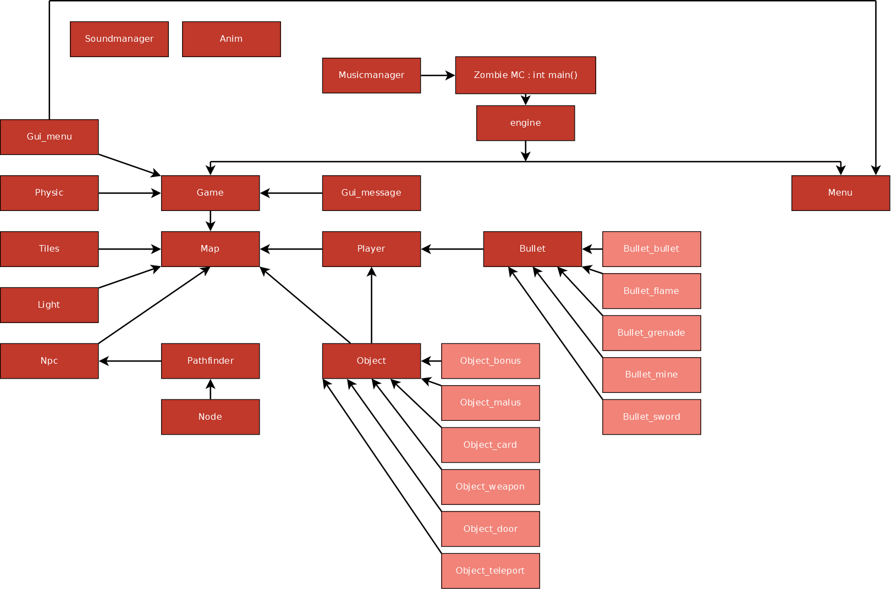

Zombies MC : présentation
« Zombie MC » est un jeu vidéo d’action en vue de haut de type shoot them up (dérivé du jeu d'action dans lequel le joueur dirige un véhicule ou un personnage devant détruire un grand nombre d'ennemis tout en esquivant leurs projectiles pour rester en vie) et survival-horror (type de jeu vidéo dans lequel le joueur doit survivre dans un environnement hostile et angoissant peuplé de monstres, morts-vivants ou autres créatures surnaturelles).
Zombies MC : pourquoi programmer un jeu vidéo ?
■ un jeu vidéo est un programme particulier demandant de maîtriser un grand nombre de compétences (programmation, graphismes, sons)
■ un jeu vidéo a un aspect ludique pour les utilisateurs
■ nous sommes tous les deux des gamers dans l'âme
Zombies MC : organisation du programme
On peut comparer le programme a une poupée russe (matriochkas). Il est composé de fonctions jouant un rôlé de plus en plus précis. Ainsi, la fonction principale ne fait que distribuer les tâches aux autres classes tandis que les fonctions de la classe physic vont gérer les collisions entre objets.

{kind=link}
Code source de la fonction main() :
int main()
{
float width = getScreen();
float height = getScreen() * ((float)sf::VideoMode::GetDesktopMode().Height/(float)sf::VideoMode::GetDesktopMode().Width);
float deltaTime;
sf::RenderWindow window(sf::VideoMode(width, height, 32), "Zombie MC", sf::Style::Close);
sf::Clock Clock;
Engine engine(width, height);
window.SetFramerateLimit(FPS);
window.UseVerticalSync(true);
MusicManager::playMusic("sounds/musique.ogg", 40.f, true);
while (window.IsOpened())
{
sf::Event event;
deltaTime = Clock.GetElapsedTime();
while(window.GetEvent(event))
{
if(event.Type == sf::Event::Closed)
{
window.Close();
}
}
window.Clear(sf::Color(5,10,20));
engine.run(window, deltaTime);
Clock.Reset();
window.Display();
}
return EXIT_SUCCESS;
}
Zombies MC : stockage des données
Comme le jeu comprenait beaucoup de données pour pouvoir fonctionner, j'ai choisi de les stocker en dehors du programme dans des fichiers de configuration écrits en XML qui sont ensuite lus avec la bibliothèque TinyXml.
Exemple de fichier XML gérant quelques armes :
Exemple de fichier XML gérant les bornes de téléportation :
Un niveau peut comporter jusqu'à 20 000 lignes de code (20 000 objets)
Zombies MC : les algorithmes principaux mis en jeu
■ algorithme de collision
■ algorithme de recherche de chemin (A*)

Zombies MC : parties du jeu à terminer
■ corriger un bug dans l'algorithme de collision avec les murs
■ terminer d'implémenter l'algorithme de recherche de chemin pour rendre les zombies plus intelligents
■ terminer les sprites du joueur pour différencier visuellement les différentes armes
■ terminer l'écran "game over"
Zombies MC : quelques données sur le projet
■ Utilisation de la SFML (Simple and Fast Multimedia Library) et de TinyXml
■ Utilisation du XML pour la gestion des données de jeu
■ Utilisation de la Programmation Orientée Objet
■ Gestion du couple souris/clavier et de la manette de Xbox 360
■ Environ 11 000 lignes de C++
■ 3 mois de travail acharné
Zombies MC : annexes
■ site web : Zombie MC